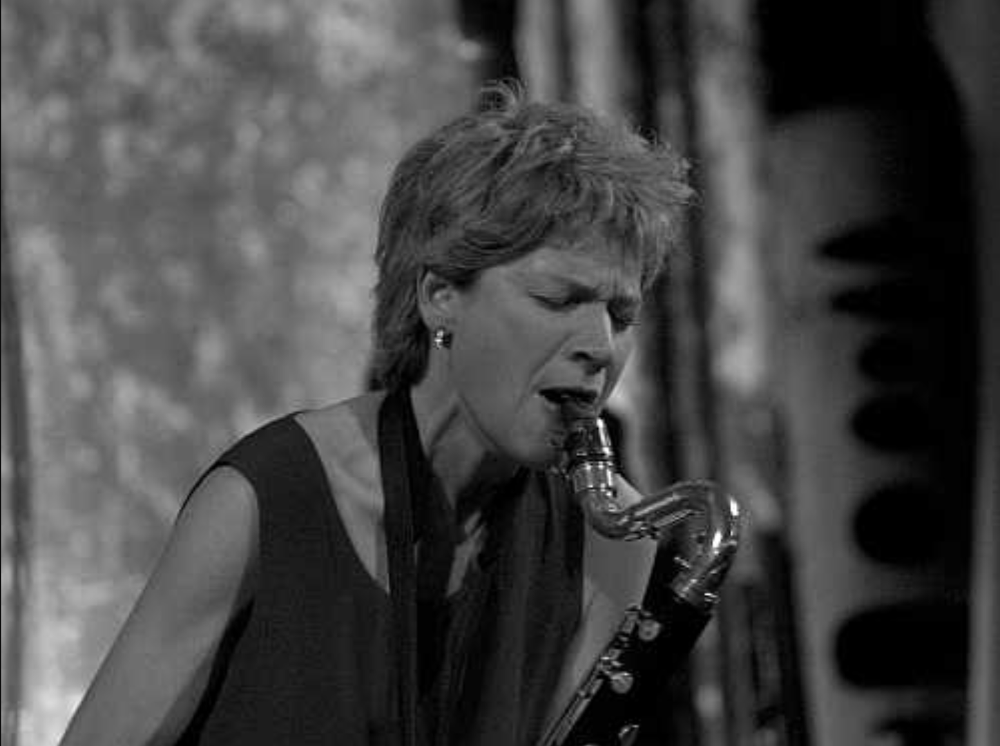
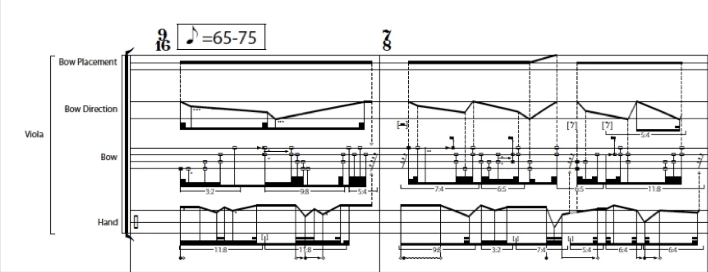

Until last October, I hadn’t played viola solo in public for about 8 or 10 years. I had performed with orchestras and string quartets, but never alone. I had always thought of myself as a terrible player. I did not have the patience to practice, but I still enjoyed playing, if only for myself in private.
While I was living in Montreal, I would go to hear improvised music at Cagibi, la Plante, Sala Rosa, Wilder & Davis, and other venues. These musicians almost never read music. Their eyes were either closed or fixated into the ether. There was sense of intense focus and sensitivity. Their performances were explosive, contemplative, and thrilling. The goal wasn’t playing correctly; it was making situations of provocative behavior. Literally people interacting through their instruments, creating conversations that transcended the norms of typical social behavior. They were creating something that I felt I could never write down.

^^ Lori Freedman, one of my favorite improvisers
I mean, I love written music. I still rock out to Shostakovich’s Cello Concerto No. 1, Romitelli’s Professor Bad Trip, Sørensen’s Angel’s Music, music that would not exist without precise systems of music notation. But I felt at that time that my notation practices were lacking.
So I started recording my own improvisations and transcribing them on a 5-line staff. This was brutal. Most of my improvisations feature rapid changes in bow pressure, bow position, finger pressure, irregular rhythms, and things that they don’t teach you in conservatory. A 5-line staff was inadequate. I tried tablature notation. It looked something like this:

Now I have mad respect for Timothy McCormack, but I didn’t want my music to look like this. I wouldn't want a performer to rehearse several hours to create something that took me a few takes to play. I didn't want to establish "one correct way" of performing something if what I'm after was created with spontaneity. I don’t like causing other people headaches. Granted, I'm not a seasoned performer, and there are certainly players out there who eat notation like this for breakfast. But to me, it seems masochistic.
In addition to my phobia in creating overly complex scores, I was also fed up with the rate at which composers learn. Typically, composers may spend several months on a piece. The project might be proposed in August, you finish the piece in January, make the parts and send them off in late January, have a couple of rehearsals in April, and a concert in May. Thus, this model gives us approximately a 9-month period between a work’s impetus and the performance. In my experience, I’m not convinced a piece works until several months after the premiere when I can clear my head and listen to the recording. It might take a year to figure out if a particular musical device works or not, and in which context it functions best. Sure, you can imagine an orchestra’s sound to the best of your abilities, but hearing the musical flesh is a totally different experience. The point is, I wanted to learn faster.
Young composers often sound very different from year to year, so when you hear a premiere, chances are that the music was written about a year ago, and the composer is already working with more matured ideas. Listening to my old pieces is like cringing while reading old diary entries...
When I moved to Berkeley in 2014 to start my PhD, I was immersed in a totally different socio-economic situation. The rent here is high, thus putting a strain on the local artistic communities. Thus, there was, in my opinion, a huge shortage of peer ensembles playing challenging notated music (see Tim’s score). Thus, I was drawn to the free improvisation scene and started performing at monthly sessions in Temescal led by Jacob Felix Heule. In these events, participants wrote down their names on slips of paper that were placed in a hat. Jacob pulled out three names. If your name was called, you went up to play with the other two folks who were called. 7 minutes on the clock. Go.
They played with the complexity and intensity of a Ferneyhough score without the neuroticism involved with looking at the score during performance. The focus was still there, but it was directed towards the sound, the instrument, and the situation, not the score. I grew comfortable performing in public, and I was hooked.

I gave up writing down my improvisations, and started I performing them. In order to mask the insecurities I had in my playing technique (but also due to inspiration from improvising saxophonist Frank Gratkowski), I thickened up my sound by strapping a motion sensor to my bow arm and hooked it up to a maxpatch similar to the one I used in Naked to the Sky.
I started performing with other musicians. This clip features composer/pianist and fellow UC Berkeley colleague James Stone, also wearing a motion sensor. His motions process my sound and mine process his.
And I started performing with dancers. This clip features James along with Shoshana Green, a butoh dancer. Shoshana has the motion sensors and is controlling the musicians’ sound, and the entire performance is improvised.
There was no concrete method to how we (the musicians) interpreted Shoshana’s movements, or how she responded to ours. We just jammed, talked about what felt good or awkward, talked about what we could do better, and jammed again.
Tangent: in 2015, I met Beat Furrer at Impuls in Graz, and I was speaking with him about his approaches to music composition through the years. He told me that he used to improvise at the piano until stopping around the age of 25. Coincidentally, I started improvising (in public) around the age of 26 -- just a strange bit of information that I just remembered.
This brings me up to the present. In the next entry, I'll discuss my next project, ironic erratic erotic. And you'll see another video of me dancing with a tuba player. Hopefully it's not the most awkward thing you've ever seen, but to be honest, it might be.